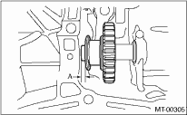

1. Move the reverse shifter rod toward the reverse side. Check and adjust clearance between the reverse idler gear and the timing case wall surface.
If out of specification, select an appropriate reverse shifter lever and adjust.
Clearance A:
6.0 — 7.5 mm (0.236 — 0.295 in)

2. After installing a suitable reverse shifter lever, shift into neutral. Check and adjust clearance between the reverse idler gear and the timing case wall surface.
If out of specification, select the appropriate washer and adjust.
Clearance:
0 — 0.5 mm (0 — 0.020 in)

3. Check the reverse idler gear and shaft for damage. Replace if damaged.